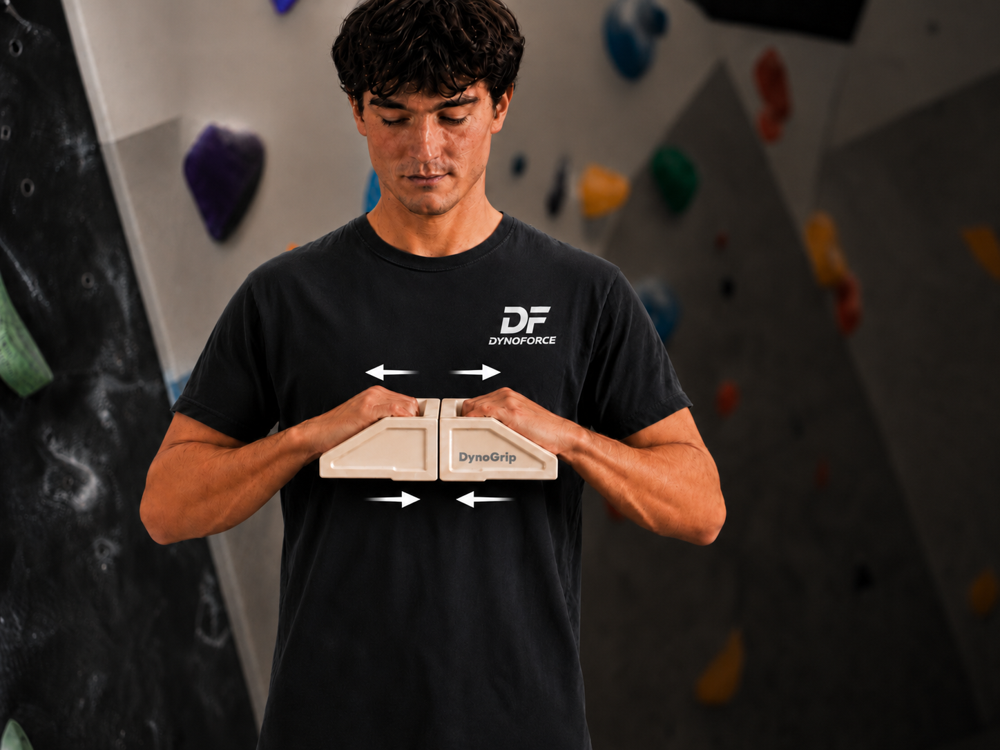
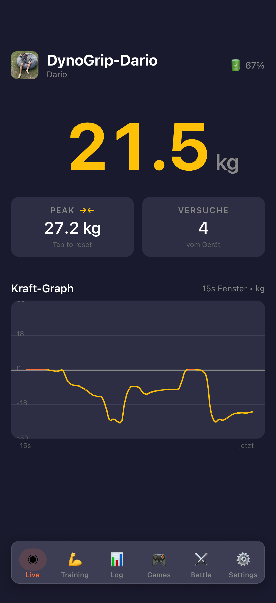

Das direkt nutzbare Kraftmessgerät für Finger-, Zug- und Drucktraining.
DynoGrip ist das kompakte All-in-one-Device für messbares Fingertraining, Griffkraft, Zug- und Druckanwendungen. Es ist vollständig in die DynoForce App integriert und so gedacht, dass es spontan, regelmässig und ohne zusätzliches Setup genutzt werden kann.

Ein Device, viele Einsatzmöglichkeiten.
DynoGrip ist nicht nur ein einzelner Griff, sondern eine vielseitige Trainings- und Messplattform. Mehrere Griffmulden mit unterschiedlichen Grifftiefen, die Möglichkeit für Zug- und Druckmessung sowie die direkte App-Anbindung machen DynoGrip zu einer kompakten Lösung für unterschiedlichste Trainingsformen.
Kein zusätzliches Zubehör nötig. DynoGrip kann spontan eingesetzt werden und ist sofort bereit für Training, Tests und kurze Sessions.
DynoGrip misst nicht nur Zugkräfte, sondern auch Druckkräfte. Dadurch werden deutlich mehr Übungen und Einsatzszenarien möglich.
In Verbindung mit der App werden aktuelle Kraft, Peak und Verlauf sofort sichtbar. Das macht Belastung nachvollziehbar statt nur gefühlt.

Eine Plattform für Zug- und Druckkraft im selben Setup.
Mit DynoGrip kannst du je nach Übung sowohl Pull- als auch Push-Bewegungen messen und trainieren. Das macht den Wechsel zwischen Fingerzug, klassischen Zugmustern und druckorientierten Anwendungen einfach und schnell. In Kombination mit der App bekommst du bei beiden Bewegungsrichtungen direkt vergleichbare Werte für Kraft, Peak und Verlauf.
- Push- und Pull-Training mit einem Device
- Direkt vergleichbare Messwerte pro Bewegungsrichtung
- Schneller Wechsel zwischen Übungen ohne Umbau
- Ideal für Reha, Prävention und Performance

Direkte Rückmeldung und strukturierte Trainingsabläufe.
Die Live-Ansicht ist nicht in erster Linie für das eigentliche Training gedacht, sondern für direkte Rückmeldung während der Nutzung. Sie zeigt aktuelle Kraft in Echtzeit, Peak-Werte und den Kraftverlauf. Dadurch werden einzelne Versuche, spontane Tests und die unmittelbare Belastung sichtbar und nachvollziehbar. Für das effektive Training gibt es zusätzlich einen eigenen Trainingsbereich in der App, in dem Übungen und komplette Abläufe mit einem Blockeditor individuell zusammengestellt werden können.
- Aktuelle Kraft in Echtzeit
- Peak pro Versuch
- Kraftverlauf als Zeitdiagramm
- Eigener Trainingsbereich mit Blockeditor
Mehr als nur eine feste Form.
Über ein intelligentes Attachment-System lassen sich verschiedene Aufsätze direkt am Gerät befestigen. Dadurch können nicht nur unterschiedliche Griffgeometrien verwendet werden, sondern auch externe Komponenten wie Seile, Schlaufen, eine Öse oder Spezialadapter angeschlossen werden. So lässt sich DynoGrip je nach Anwendung für unterschiedliche Trainingsformen erweitern — von direkter Nutzung in der Hand bis zu Zuganwendungen mit Fixpunkt oder anderen Setups.
- Unterschiedliche Griffgeometrien
- Seile, Schlaufen und Öse
- Nutzung mit Fixpunkt oder externem Setup
- Adapter für externe Trainingsgeräte
- Individuelle oder selbst entwickelte Attachments
Direkt nutzbar und vielseitig erweiterbar.
DynoGrip kann direkt in die Hand genommen und ohne grossen Aufbau verwendet werden. Gleichzeitig lässt sich das Device über Attachments an unterschiedliche Anwendungen anpassen. In Verbindung mit der App und dem separaten Trainingsbereich entstehen so sowohl spontane Messungen als auch strukturierte Trainingsabläufe für Finger-, Zug- und Drucktraining.
- Fingerkrafttraining mit direkter Kraftmessung
- Zug- und Druckanwendungen in einem Device
- Spontane Tests und kurze Sessions ohne grosses Setup
- Strukturierte Trainingsabläufe mit App-Unterstützung
- Flexibel erweiterbar je nach Einsatzbereich
Breite Einsatzmöglichkeiten.
- Reha nach Verletzungen
- Langsamer, kontrollierter Belastungsaufbau
- Korrektur von Kraftasymmetrien
- Präventives Training zur Verletzungsvermeidung
- Messbares Performance-Training
DynoGrip ist kein Medizinprodukt, sondern ein Performance-Tool mit sehr breiter Einsatzspanne.
Hardware und Systemgedanke.
- 24Bit ADC für hohe Auflösung
- 100 kg Messdose mit 150Kg Überlast
- USB-C Ladeanschluss
- Piezo-Speaker
- OTA Firmware-Update und Webportal mit Statistiken
- Holzgriffe aus Schweizer Buchen-Hartholz